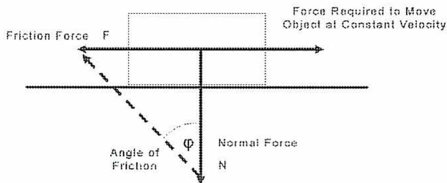
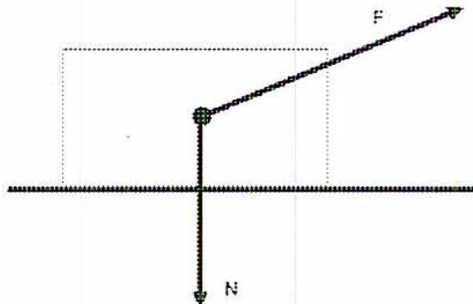
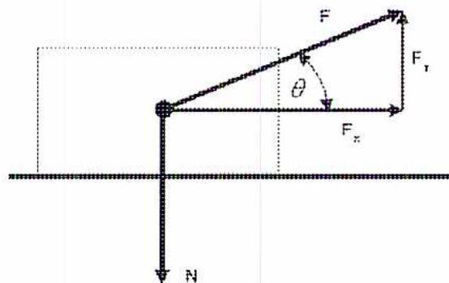
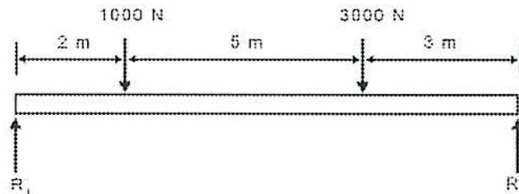

Use equation 1.1 (See Section I, paragraph 27.2.1.)
$$ t = \frac{PD}{2S + P} + 0.005D + e $$
Where
$$ \begin{aligned} P &= 3.5 \text{ MPa} \\ S &= 88.3 \text{ MPa} \\ D &= 75 \text{ mm} \\ e &= 0 \end{aligned} $$
$$ \begin{aligned} t &= \frac{PD}{2S + P} + 0.005D + e \\ &= \frac{3.5 \times 75}{2(88.3) + 3.5} + (0.005 \times 75) + 0 \\ &= \frac{262.5}{180.1} + 0.375 \\ &= 1.833 \text{ mm (Ans.)} \end{aligned} $$
(See section VIII-1, Appendix 1, paragraph 1.2 (a).)
The quantity \( 0.385SE = 54.67 \) MPa; since this is less than \( P \) at 62 MPa, use formula 1.5
$$ t = R(\sqrt{Z} - 1) \quad \text{where } Z = \frac{SE + P}{SE - P} $$
Where
$$ P = 62 \text{ MPa} $$
$$ S = 142 \text{ MPa} $$
$$ R = 360/2 = 180 \text{ mm} $$
$$ E = 1.0 $$
$$ \begin{aligned} Z &= \frac{(142 \times 1) + 62}{(142 \times 1) - 62} \\ &= \frac{204}{80} \\ &= 2.55 \end{aligned} $$
$$ \begin{aligned} t &= 180(\sqrt{2.55} - 1) \\ &= 180 \times 0.5969 \\ &= 107.44 \text{ mm (Ans.)} \end{aligned} $$
Use equation 2.3 to determine the thickness of the header. (See Section I, PG-27.2.2)
$$ t = \frac{PR}{SE - (1 - y)P} + C $$
Where
$$ P = 6.205 \text{ MPa} $$
$$ S = 128.2 \text{ MPa} $$
$$ R = 304 \text{ mm} $$
$$ y = 0.4 \text{ (see note 6)} $$
$$ E = 1 $$
$$ C = 0 $$
$$ \begin{aligned} t &= \frac{6.205 \times 304}{128.2 - (1 - 0.4)6.205} + 0 \\ &= \frac{1886.32}{128.2 - 3.723} \\ &= \frac{1886.32}{124.477} \\ &= \mathbf{15.15 \text{ mm}} \quad (\text{Ans.}) \end{aligned} $$
Use equation 3.2 to determine the thickness of the head.
(See Section I, paragraph PG-29-11.)
$$ t = \frac{PL}{2S - 0.2P} $$
Where
$$ \begin{aligned} P &= 6.205 \text{ MPa} \\ S &= 128.2 \text{ MPa} \\ L &= 304 \text{ mm} \end{aligned} $$
But
Paragraph PG-29-12 states that if a flanged-in manhole is in the full-hemispherical head, the thickness shall be the same as for a head dished to a segment of a sphere with the dish radius L as 8/10 D of the diameter of the shell plus additional thickness of 3.2 mm (opening is less than 152mm) as specified in PG-29.3
Therefore, taking the outside diameter of the header
$$ \begin{aligned} L &= 2 \times (304 + 15.15) \times 8/10 \\ &= 510.64 \end{aligned} $$
Additional thickness per PG-29.3 = 3.2 mm
$$ \begin{aligned} t &= \frac{PL}{2S - 0.2P} + \text{additional thickness} \\ &= \frac{6.205 \times 510.64}{2(128.2) - 0.2(6.205)} + 3.2 \\ &= \frac{3168.5212}{256.4 - 1.241} + 3.2 \\ &= 12.42 + 3.2 \\ &= \mathbf{15.62 \text{ mm}} \quad (\text{Ans.}) \end{aligned} $$
Therefore, the required thickness of the header is 15.15 mm and the required thickness of the head is 15.62 mm.
(See section VIII-1, paragraph UG-32 (f).)
The quantity \( 0.665SE = 83.37 \) MPa; since this is greater than the design pressure of 1.034 MPa, use equation 3.4.
$$ t = \frac{PR}{2SE - 0.2P} + \text{corrosion allowance} $$
Where
$$ P = 1.034 \text{ MPa} $$
$$ S = 147.5 \text{ MPa} $$
$$ R = 1830/2 + 4 = 919 \text{ mm} $$
$$ E = 0.85 $$
$$ \begin{aligned} t &= \frac{1.034 \times 919}{2(147.5 \times 0.85) - 0.2(1.034)} + 4 \\ &= \frac{950.246}{250.5432} + 4 \\ &= 3.79 + 4 \\ &= 7.79 \text{ mm (Ans.)} \end{aligned} $$
Section VIII-1, UG-34 (a) applies to both circular and non-circular heads. Section VIII-1, Fig. UG-34 (h) has a value of \( C = 0.33 \) . As there are no butt-welded joints in the plate, the value of \( E = 1 \) . Section VIII-1, UG-34 (c)(3) provides the formula for square and oblong heads.
Therefore
$$ \begin{aligned} Z &= 3.4 - \frac{2.4d}{D} \\ &= 3.4 - \frac{2.4 \times 200}{400} \\ &= 3.4 - 1.2 \\ &= 2.2 \end{aligned} $$ $$ \begin{aligned} t &= 200 \sqrt{\frac{2.2 \times 0.33 \times 2.5}{103 \times 1}} \\ &= 200 \sqrt{0.01762} \\ &= 200 \times 0.1327 \\ &= 26.55 \text{ mm (Ans.)} \end{aligned} $$
(See Section I PG-33.3.)
![Diagram of a nozzle reinforcement scheme in a cylindrical vessel wall. The diagram shows a nozzle with wall thickness t_n and inner radius R_n. The vessel wall has thickness t_r. A reinforcement plate of thickness t_e is shown. The limits of reinforcement are defined by the distance d from the nozzle centerline, where d is the larger of R_n + t_n + t or the inner diameter of the nozzle. The diagram also indicates the weld length WL_t and the nozzle height above the vessel wall. The reinforcement area is shaded with cross-hatching.](53f1f7d17b3e7aae62169c41d2a88a77_img.jpg)
The diagram illustrates a nozzle reinforcement scheme. A nozzle with wall thickness \( t_n \) and inner radius \( R_n \) is shown passing through a vessel wall of thickness \( t_r \) . A reinforcement plate of thickness \( t_e \) is added to the vessel wall. The limits of reinforcement are defined by the distance \( d \) from the nozzle centerline, where \( d \) is the larger of \( R_n + t_n + t \) or the inner diameter of the nozzle. The diagram also indicates the weld length \( WL_t \) and the nozzle height above the vessel wall. The reinforcement area is shaded with cross-hatching.
The allowable stress for both SA-516-55 and SA-209-T1 is 108.2 MPa at 250°C.
Therefore
$$ \begin{aligned} f_{rl} &= S_n/S_v \\ &= \frac{108.2}{108.2} \\ &= 1 \end{aligned} $$
Use equation 5.1 (See PG-32.1.2.)
$$ K = \frac{PD}{1.82St} $$
Where
$$ \begin{aligned} P &= 6.0 \text{ MPa} \\ D &= 780 + (2 \times 28.575) = 837.15 \text{ mm} \\ S &= 108.2 \text{ MPa} \\ t &= 28.575 \text{ mm} \end{aligned} $$
$$ \begin{aligned} K &= \frac{6 \times 837.15}{1.82(108.2 \times 28.575)} \\ &= 0.8926 \end{aligned} $$
Use the chart Fig. PG-32 as K is less than 0.990.
Use equation 2.3 to find the minimum required thickness t of the drum.
(See PG-27.22.)
$$ t = \frac{PR}{SE - (1-y)P} + C $$
Where
$$ \begin{aligned} R &= 780/2 = 390 \text{ mm} \\ E &= 1 \\ y &= 0.4 \\ C &= 0 \end{aligned} $$
$$ \begin{aligned} t &= \frac{6.0 \times 390}{(108.2 \times 1) - (1 - 0.4)6.0} + 0 \\ &= \frac{2340}{104.6} \\ &= 22.37 \text{ mm} \end{aligned} $$
Therefore
$$ t_r = 22.37 \text{ mm and } t = 28.575 \text{ mm} $$
Use equation 1.1 to find the minimum thickness of the nozzle (See PG-27.2.1.)
$$ t = \frac{PD}{2S + P} + 0.005D + e $$
Where
$$ D = 150 + (2 \times 35) = 220 \text{ mm} $$
$$ e = 0 $$
$$ \begin{aligned} t &= \frac{6.0 \times 220}{2(108.2) + 6.0} + 0.005(220) + 0 \\ &= \frac{1320}{222.4} + 1.1 \\ &= 5.935 + 1.1 \\ &= 7.035 \text{ mm} \end{aligned} $$
Therefore,
$$ t_{rn} = 7.035 \text{ mm and } t_n = 35 \text{ mm} $$
Limit of compensation parallel to drum surface (see Fig PG-33.1).
$$ X = \text{larger of } d \text{ or } (0.5d + t_n + t) $$
$$ X = 150 \text{ or } (0.5 \times 150 + 35 + 28.575) = 138.575 $$
$$ X = 150 \text{ mm} $$
Limit of compensation normal to drum surface (see Fig. PG-33.1).
$$ Y = \text{smaller of } 2.5t \text{ or } (2.5t_n + t_c) \text{ [As } t_c \text{ is not stated } t_c = 0] $$
$$ Y = 2.5 \times 28.575 = 71.4375 \text{ or } 2.5 \times 35 = 87.5 $$
$$ Y = 71.4375 \text{ mm} $$
Reinforcement area required A (see Fig. PG-33.1).
$$ A = dt_r F \text{ where } F \text{ is from the chart Fig. PG-33.3. } F = 1 $$
$$ A = 150 \times 22.37 \times 1 $$
$$ A = 3355.5 \text{ mm}^2 $$
Reinforcement area available in drum shell (see Fig PG-33.1).
$$ A_1 = \text{larger of } d(t - F_t) \text{ or } 2(t + t_n)(t - F_t) $$
$$ A_1 = 150(28.575 - 1 \times 22.37) \text{ or } 2(28.575 + 35)(28.575 - 1 \times 22.37) $$
$$ A_1 = 930.75 \text{ or } 788.96 $$
$$ A_1 = 930.75 $$
Reinforcement are available in nozzle wall (see Fig. PG-33.1).
$$ A_2 = \text{smaller of } 2(t_n - t_{rn})(2.5tf_{r1}) \text{ or } 2(t_n - t_{rn})(2.5t_n + t_c)f_{r1} $$
$$ A_2 = 2(35 - 7.035)(2.5 \times 28.575 \times 1) \text{ or } 2(35 - 7.035)(2.5 \times 35 + 0) \times 1 $$
$$ A_2 = 3995.5 \text{ or } 4893.87 $$
$$ A_2 = 3995.5 \text{ mm}^2 $$
Total area available from drum and nozzle
$$ A_1 + A_2 = 930.75 + 3995.5 = 4926.25 \text{ mm}^2. $$
As this is greater than area \( A = 3355.5 \text{ mm}^2 \) , no additional reinforcement is required.
Section I, paragraph PG-46.1 (2001)
$$ P = \frac{t^2 SC}{p^2} \therefore p^2 = \frac{t^2 SC}{P} \therefore p = t \sqrt{\frac{SC}{P}} $$
$$ t = 12.2 \text{ mm} $$
$$ P = 865 \text{ kPa} $$
$$ C = 2.2 $$
$$ S = 98.6 \text{ MPa or } 98\,600 \text{ kPa} $$
$$ \begin{aligned} p &= t \sqrt{\frac{SC}{P}} \\ &= 12.2 \times \sqrt{\frac{98600 \times 2.2}{865}} \\ &= 12.2 \times \sqrt{250} \\ &= 12.2 \times 15.843 \\ &= 188.2 \text{ mm (Ans.)} \end{aligned} $$
From Section I, paragraph PG-52.1 (2001)
$$ \begin{aligned} E &= \frac{p - d}{p} \\ &= \frac{140 - 82.5}{140} \\ &= 0.4107 \end{aligned} $$
From Section I, paragraph PG-27.2.2
$$ P = \frac{SE(t - C)}{R + (1 - y)(t - C)} $$
$$ S = 105.5 \text{ MPa} $$
$$ E = 0.4107 $$
$$ t = 50.8 \text{ mm} $$
$$ R = 500 \text{ mm} $$
$$ y = 0.4 $$
$$ C = 0 $$
$$ \begin{aligned} P &= \frac{SE(t - C)}{R + (1 - y)(t - C)} \\ &= \frac{105.5 \times 0.4107(50.8 - 0)}{500 + (1 - 0.4)(50.8 - 0)} \\ &= \frac{2201.1}{500 + 30.48} \\ &= 4.149 \text{ MPa} \\ &= 4149 \text{ kPa (Ans.)} \end{aligned} $$
From Section I, Appendix A, paragraph A-12
$$ W = \frac{C \times H \times 0.75}{2558} $$
\( W \) = mass of steam generated
\( C \) = mass of fuel burned = 5500 kg/h
\( H \) = calorific value from A-17 = 34 000 for coal and 35 700 for natural gas
$$ \begin{aligned} W &= \frac{C \times H \times 0.75}{2558} \\ &= \frac{5500 \times 34\,000 \times 0.75}{2558} \\ &= 54827.99 \text{ kg of steam/h} \end{aligned} $$
At the new rating \( W = 54\,827.99 \times 1.03 = 56\,472.83 \text{ kg of steam/h} \)
$$ \begin{aligned} W &= \frac{C \times H \times 0.75}{2558} \\ C &= \frac{W \times 2558}{H \times 0.75} \\ &= \frac{56\,472.83 \times 2558}{35\,700 \times 0.75} \\ &= 5395.24 \text{ m}^3 \text{ of natural gas per hour (Ans.)} \end{aligned} $$
The maximum amount of natural gas that can be burned per hour is \( 5395.24 \text{ m}^3 \) .
$$ P = \frac{Ct}{D} \quad \therefore \quad t = \frac{PD}{C} $$
$$ C = 96\,000 $$
$$ D = 1118 \text{ mm} $$
$$ P = 1375 \text{ kPa} $$
$$ \begin{aligned} t &= \frac{PD}{C} \\ &= \frac{1375 \times 1118}{96000} \\ &= 16 \text{ mm (Ans.)} \end{aligned} $$
Step 1: Calculate the ratios
$$ \begin{aligned} \frac{D_o}{t} &= \frac{1118}{16} \\ &= 69.875 \end{aligned} $$
$$ \begin{aligned} \frac{L}{D_o} &= \frac{2500}{1118} \\ &= 2.236 \end{aligned} $$
Step 2: Use Section II, Part D, Chart Fig. G.
Step 3: The value of \( A = 0.001 \) .
Step 4: Use Section I, paragraph PFT-50.1. The design temperature = \( 371^\circ \text{ C} \)
Step 5: Use Section II, Part D, Fig. CS-2. The value of \( B = 8000 \)
Step 6:
$$ \begin{aligned} P_a &= \frac{4B}{3 \left( \frac{D_o}{t} \right)} \\ &= \frac{4 \times 8000}{3 \times 69.875} \\ &= 152.65 \text{ kPa (Ans.)} \end{aligned} $$
Step 7: The maximum allowable working pressure of a plain furnace tube with the above dimensions is 152.65 kPa.
3. Why is the jurisdiction of the Court of Queen's Bench of interest to the safety officer (inspector)?
The jurisdiction of the Court of Queen's Bench of interest to Safety Officer (Inspector) includes the following:
Boiler external piping must be inspected by an Authorized Safety Officer (Inspector). The requirements are provided in Section I of the ASME Boiler and Pressure Vessel Code. The qualifications of the Authorized Safety Officer (Inspector) are stated in Section I. Paragraph PG-91. The duties of the Authorized Safety Officer (Inspector) are summarized in Section I. Paragraph PG 90.
ASME B31.1 requires that examination of the piping be performed by the piping manufacturer, fabricator, erector, or a party authorized by the Owner as a quality control function. These examinations include visual observations and nondestructive examination, such as radiography, ultrasonic, eddy-current, liquid-penetrant, and magnetic-particle methods.
Inspection is the responsibility of the Owner and may be performed by employees of the Owner or a party authorized by the Owner except in the case of boiler external piping , which requires inspection by an Authorized Safety Officer (Inspector). The Authorized Safety Officer (Inspector) is responsible for ensuring, before the initial operation, compliance with the engineering design as well as with the material, fabrication, assembly, examination, and test requirements of ASME B31.1.
Note that the process of inspection does not relieve the manufacturer, fabricator, or erector of his or her responsibilities for complying with the Code. ASME B31.1 does not specify qualifications for the Inspector.
Requirements for the examination processes are described in Section V of the Boiler and Pressure Vessel Code, with limited exceptions and additions. Section V is referenced by ASME B31.1. The required degree of examination and the acceptance criteria for the examinations are provided in ASME B31.1. Chapter VI.
ASME stands for the American Society of Mechanical Engineers. The applicable codes used for design and construction of pressure equipment are listed below.
The first step is the feasibility study. This is to determine if it is feasible to build the new plant. The study is used to determine the plant size and to estimate costs. The primary emphasis of the engineering feasibility study is economics. The study is used to determine the cost of the new plant and to ascertain its economic viability – whether the plant can make a profit.
If the plant proves to be viable during the feasibility study, the process then moves to the next stage. During this phase, the detailed design and specifications are produced. The engineering company produces drawings and specifications, with the amount of detail required for construction companies to create competitive bids. Contracts are then written to build the plant as laid out in the drawings and specifications.
The engineering study includes a report used to obtain capital funds for plant construction. It includes outlays for such items as operations, maintenance, depreciation, insurance, interest, taxes, and a budget. It includes recommendations for such items as: capital required, operating costs, and fixed costs. The engineering study often includes economic alternatives. Such alternatives could include different plant locations, various plant output sizes, or use of different fuels.
Detailed plant engineering follows the engineering study and the decision to proceed. The detailed design builds upon the work accomplished in the engineering study but contains much more detail. Items included in the detailed design include: Detailed drawings such as P& Ids, detailed specifications for all engineering disciplines including material specifications and construction drawings including isometric piping drawings.
Change orders add to the cost of the project, as the changes must be re-engineered and changes made to the drawings and specifications. The least expensive time to make changes is before the drawings and specifications have been finalized.
Some of the duties of operations people during the construction phase of the project include:
In design-bid-build the owner gets a scope definition with 5% basic engineering complete. An engineering company completes the detailed engineering. When working drawings and designs are completed, bids are sent out for the construction of the plant. Construction is contracted out to a general contractor. The plant scope is not finalized until late in the project. The cost of the project cannot be finalized until all changes in scope have been completed.
In design-build, with the basic design engineering about 20% complete, the owner selects a company to complete the detailed design, order the equipment, and construct the plant. The entire project is done based on a final, lump sum payment. The final payment is often made after the performance run of the plant has been completed. This type of arrangement combines the roles of the designer and the general contractor.
Planning is a higher level activity that involves establishing organizational goals, establishing a strategy for achieving the goals and developing plans to integrate and coordinate activities at all levels.
Organizing refers to the organizational structure or the manner in which people are grouped to determine what activities are accomplished, how they are to be done, by whom and when.
Leading is the function whereby managers direct, coordinate and motivate employees in their work. Whenever necessary, the manager serves to resolve conflicts among members.
Controlling consists of monitoring the performance of activities by comparing them to previously set goals and objectives. If there are significant deviations, management must evaluate what has to be done to close the gap and correct the deficiencies.
The traditional way for setting objectives is for top-level managers to state the overall objectives and essentially impose them on the organization. The next level of managers takes these objectives, interprets them for applicability to their part of the organization and passes them down to the next level. Finally, the lowest level of management receives the objectives and attempts to meet them.
Management by objectives (MBO) is a system whereby objectives are jointly developed by those involved and progress is periodically reviewed. Rewards may be tied directly to performance as it relates to agreed to objectives.
The decision-making process consists of:
The following items will maximize the effectiveness of an interview (choose any four):
These are the steps that should be taken to set up a training program for employees (choose any four):
The successful manager and supervisor can motivate employees by (choose any four):
The way discipline is applied is sometimes called the “hot stove” rule because of the similarity with touching a hot stove. This leads to four aspects of discipline:
For the report to effectively communicate, the following aspects should be carefully considered (choose any four):
Choose any three from the following.
This definition has a number of components:
Preventive maintenance covers all pre-planned maintenance activities that are always performed before failure occurs. Corrective maintenance, on the other hand, is done after a failure.
3. List four items that might need to be identified during planning of maintenance.
Any four of the following items apply.
Planning is needed to identify some or all of the following items:
Planning is needed to identify some or all of the following items:
4. Describe what is meant by the critical path.
The critical path is defined as all the tasks that will increase project completion time if they take longer than planned. If there is some way to shorten the duration of any of these tasks, then the overall completion time will be decreased.
5. List four types of information that might be recorded in a CMMS.
Any four of the following items apply.
Most CMMS's record these types of information:
6. What are the two approaches used for preparing a maintenance budget?
Two approaches are used for budgeting:
Hazard is a source or situation with the potential for causing harm to a person or property
Risk is a function of the potential severity of the hazard and the likelihood of the hazard occurring.
An Initial Status Review is used when implementing a new health & safety program It establishes how the existing health & safety program, processes and procedures compare to the desired program and highlights where improvement action needs to be taken.
Top management involvement in the overall health & safety program is essential to demonstrate their commitment to safe operation and to provide the necessary resources for implementing the program.
They need to be involved in:
Operational controls are safety processes or procedures that are put in place to control plant wide hazards. Work instructions, which may incorporate safety requirements, are detailed procedures that apply to specific tasks or parts of the plant and do not have plant wide application.
5. Compare the purposes of safety checklists, safety inspections and safety audits.
Safety checklists are used by on-shift personnel as a memory aid and to record the current state of the plant.
Safety inspections are carried out by supervisors in order to satisfy themselves that the risks are under control and that the safety related procedures are being followed in their area of responsibility.
Safety audits are used by management to evaluate the effectiveness of each element of the overall health & safety program with a view to identifying areas for continuous improvement.
6. Explain the relationship between the plant's risk reduction plan and its safety training program.
No plant has either the time or limitless resources that can be used for training. The risk reduction plan for the plant will identify those hazards that have the greatest associated risk. Training resources can then be focused on the high risk hazards.
7. Discuss the advantages and disadvantages of computer based training.
Computer-based training advantages:
Computer-based training disadvantages:
The final velocity is calculated from the equation:
$$ u = 10 \text{ m/s} \quad a = 5 \text{ m/s}^2 \quad t = 20 \text{ s} $$
$$ v = u + at $$
$$ v = 10 + (5 \times 20) \text{ m/s} $$
$$ v = 110 \text{ m/s (Ans.)} $$
The distance is determined using the equation:
$$ s = \left( \frac{u + v}{2} \right) t $$
$$ s = \left( \frac{10 + 110}{2} \right) 20 \text{ m} $$
$$ s = 1200 \text{ m (Ans.)} $$
The accelerating force is determined by equation
$$ m = 10 \text{ kg} \quad a = 5 \text{ m/s}^2 $$
$$ F = ma $$
$$ = 10 \times 5 $$
$$ = 50 \text{ kg m/s}^2 $$
$$ = 50 \text{ N (Ans.)} $$
3. (a) Define momentum.
(b) Calculate the momentum of a 50 kg mass moving at a velocity of 10 m/s.
(a) Momentum is the product of the mass of a body and its velocity.
(b) Using the equation:
$$ m = 50 \text{ kg} \quad v = 10 \text{ m/s} $$
$$ p = mv $$
$$ p = 50 \times 10 $$
$$ p = 500 \text{ kg m/s (Ans.)} $$
Note that the distance is not relevant in this question.
4. What is the kinetic energy of a vehicle of mass 1000 kg travelling at 36 km/h?
$$ m = 1000 \text{ kg} $$
$$ v = 36 \text{ km/h} $$
$$ \begin{aligned} E_K &= \frac{36 \text{ km} \times 1000 \text{ m/km}}{\text{h} \times 60 \text{ min/h} \times 60 \text{ sec/h}} \\ &= 10 \text{ m/s} \end{aligned} $$
The kinetic energy is then calculated as:
$$ \begin{aligned} E_K &= \frac{1}{2} mv^2 \\ &= \frac{1}{2} \times 1000 \times 10^2 \\ &= 50,000 \text{ J} \\ &= 50 \text{ kJ (Ans.)} \end{aligned} $$
With a two stroke engine, there is one power stroke per revolution, so the number of strokes per second is:
$$ \begin{aligned} N &= \frac{1 \text{ power stroke/rev} \times 210 \text{ rpm}}{60 \text{ sec/min}} \\ &= 3.5 \text{ power strokes per second} \end{aligned} $$
$$ \begin{aligned} \text{Total indicated power/cylinder} &= \frac{6000}{4} \\ &= 1500 \text{ kW} \end{aligned} $$
Because a Pa (Pascal) is equivalent to a N/m 2 (Newton/metre squared), the indicated power produced by each cylinder is calculated using the following equation:
Given:
$$ P_i = 1500 \text{ kW} $$
$$ p = 1000 \text{ kPa} $$
$$ L = 1.2 \text{ m} $$
$$ N = 3.5 $$
$$ \begin{aligned} \text{Calculate cylinder area} \quad P_i &= pLAN \\ A &= \frac{P_i}{pLN} \\ A &= \frac{1500}{1000 \times 1.2 \times 3.5} \\ A &= 0.357 \text{ m}^2 \end{aligned} $$
Calculate diameter of each cylinder:
$$ \begin{aligned} A &= \pi r^2 \\ \pi r^2 &= A \\ r^2 &= \frac{A}{\pi} \\ r &= \sqrt{\frac{A}{\pi}} \\ r &= \sqrt{\frac{0.357}{3.1416}} \\ r &= \sqrt{0.1136} \\ r &= 0.337 \text{ m or } 337 \text{ mm} \end{aligned} $$
Cylinder diameter = 674 mm (Ans.)
The angular velocity is
$$ \begin{aligned}\omega &= \frac{2\pi}{60} \times n \\ &= \frac{2\pi}{60} \times 200 \\ &= 20.94 \text{ rad/s (Ans.)}\end{aligned} $$
The moment of inertia is a combination of the mass and the distance of each part of that mass from the axis of rotation. It is dependent on the shape of the object and its axis of rotation. Once the moment of inertia has been determined, it is convenient to define an equivalent radius at which the mass can be assumed to be concentrated. This is called the radius of gyration.
The torque is calculated as
$$ T = F \times r = 50 \times 1 = 50 \text{ Nm} $$
Convert rpm to rad/s:
$$ \begin{aligned}\omega \text{ (rad/s)} &= \frac{2\pi}{60} \times n \\ &= \frac{2\pi}{60} \times 150 \\ &= 15.71 \text{ rad/s}\end{aligned} $$
Kinetic energy at 150 rpm:
$$ \begin{aligned}K &= \frac{1}{2} m \omega^2 k^2 \\ &= \frac{1}{2} \times 125 \times 0.4^2 \times 15.71^2 \\ &= 2468.04 \text{ kJ (Ans.)}\end{aligned} $$
Kinetic energy at 350 rpm:
$$ \begin{aligned}K &= 2468.04 \times \left( \frac{350}{150} \right)^2 \\ &= 2468.04 \times 2.33^2 \\ &= 13\,399 \text{ kJ (Ans.)}\end{aligned} $$
$$ \begin{aligned}W &= Fs \\ &= 420 \text{ kg} \times 9.81 \text{ m/s}^2 \times 10 \text{ m} \\ &= 41202 \text{ J (Ans.)}\end{aligned} $$
$$ \begin{aligned}\text{Brake Power} &= \frac{41202 \text{ J}}{1.74 \times 60 \text{ s}} \\ &= 394.7 \text{ W (Ans.)}\end{aligned} $$
Indicated Power = 416 W
$$ \begin{aligned}\eta_m &= \frac{394.7}{416} \times 100 \\ &= 94.9\% \text{ (Ans.)}\end{aligned} $$
Given:
Radius of the pulley = 150 mm
Speed of the pulley = 350 rpm
Tension on right side = 1800 N
Tension on slack side = 500 N
With the addition of the belt thickness, the radius will be increased by half of the belt thickness. With a belt thickness of 14 mm, the new radius will be 157.0 mm.
Power transmitted:
$$ \begin{aligned}P &= 2\pi(F_1 - F_2)r \frac{n}{60} \\ &= 2\pi(1800 - 500) \times 0.157 \times \frac{350}{60} \\ &= 7476.4 \text{ W} \\ &= 7.476 \text{ kW (Ans.)}\end{aligned} $$
Centripetal force acts toward the center of rotation due to acceleration caused by a change in velocity and is the one that produces the circular motion.
Centrifugal force tries to move the object away from the center of rotation. The two forces are equal in magnitude but opposite in direction.
For the 80 rpm:
$$ \frac{80 \text{ rpm} \times 2\pi}{60} = \frac{8}{3}\pi \text{ rad/s} $$
For the 120 rpm:
$$ \frac{120 \text{ rpm} \times 2\pi}{60} = 4\pi \text{ rad/s} $$
$$ \text{Height} = \frac{g}{\omega^2} $$
$$ \begin{aligned} h_1 &= \frac{g}{\left(\frac{8}{3}\pi\right)^2} \\ &= \frac{9.81 \times 3^2}{8^2 \times \pi^2} \\ &= 0.1398 \text{ m} \end{aligned} $$
$$ \begin{aligned} h_2 &= \frac{g}{(4\pi)^2} \\ &= \frac{9.81}{(4 \times \pi)^2} \\ &= 0.0621 \text{ m} \end{aligned} $$
$$ \begin{aligned} \text{Change in height} &= h_1 - h_2 \\ &= 0.1397 - 0.0621 \\ &= 0.0776 \text{ m} \\ &= 77.6 \text{ mm (Ans.)} \end{aligned} $$
Taking moments about the center of rotation, the solution will be
$$ 0.5 \times 100 = 1 \times r $$
$$ r = 50 \text{ mm} $$
The compensating mass is placed in the opposite direction to the unbalance mass.
Static friction is the force exerted between two bodies that are not moving relative to each other.
Sliding friction is the force acting against the direction of motion and parallel to the two surfaces while they are moving relative to each other. The coefficient of kinetic friction is less than the coefficient of static friction. This means that it takes more force to start a body sliding than it does to keep the body sliding.
The coefficient of sliding friction \( \mu \) (mew) is defined as
$$ \mu = \frac{F}{N} $$
\( F \) is the friction force that balances the force acting on an object while it slides at a constant velocity. \( N \) is the normal force that presses the two surfaces together.

The diagram shows a rectangular block on a horizontal surface. A solid horizontal arrow pointing to the right is labeled "Force Required to Move Object at Constant Velocity". A solid horizontal arrow pointing to the left is labeled "Friction Force F". A solid vertical arrow pointing downwards from the center of the block is labeled "Normal Force N". A dashed line extends from the tip of the normal force arrow, pointing downwards and to the left. The angle between the normal force arrow and this dashed line is labeled with the Greek letter \( \phi \) and the text "Angle of Friction".
Forces Related to Friction
A mass of 100 kg slides along a horizontal plane at uniform velocity. If the coefficient of friction is 0.1, what will be the force required to move the mass?
The normal force is calculated by the equation
$$ \begin{aligned} N &= mg \\ &= 100 \times 9.81 \\ N &= 981 \text{ N} \end{aligned} $$
The force required to move the object at constant velocity will be
$$ \begin{aligned} F &= \mu N \\ &= 0.1 \times 981 \\ F &= 98.1 \text{ N} \end{aligned} $$

A diagram showing a rectangular block on a horizontal surface. A vertical line with a downward-pointing arrow from the center of the block is labeled 'N', representing the normal force. A diagonal line with an arrow pointing upwards and to the right from the center of the block is labeled 'F', representing an applied force. A dashed rectangle outlines the original position of the block.
Non-Parallel Forces
The vectors for the forces are shown on the diagram as follows

A vector diagram showing the forces acting on a block. A vertical line with a downward-pointing arrow from the center is labeled 'N'. A diagonal line with an arrow pointing upwards and to the right from the center is labeled 'F'. A horizontal line is drawn from the tail of 'F' to the right, and a vertical line is drawn from the head of 'F' down to the horizontal line. The horizontal component is labeled 'F
x' and the vertical component is labeled 'F
y'. The angle between 'F' and 'F
x' is labeled with the Greek letter theta (θ). A dashed rectangle outlines the original position of the block.
Non-Parallel Forces Vectors
The vector equations for the applied force become
$$ F_y = F \sin \theta $$
$$ F_x = F \cos \theta $$
The basic equation for the coefficient of friction is
$$ \mu = \frac{F}{N} $$
In this case, \( F = F_x \) and \( N = N - F_y \) . Substituting these in the basic equation for the coefficient of friction, we derive as follows
$$ \mu = \frac{F}{N} $$
$$ \mu = \frac{F_x}{N - F_y} $$
$$ \mu = \frac{F \cos \theta}{N - F \sin \theta} $$
$$ F = \frac{\mu N}{\cos \theta + \mu \sin \theta} $$
4. Define the angle of repose and state the equation that relates it to the coefficient of friction.
The angle of repose is the angle of the incline at the point that an object will start to slide. The coefficient of friction is defined by the angle of repose through the equation
$$ \mu = \tan \alpha $$
![Diagram of a screw jack on an inclined plane. The plane makes an angle alpha with the horizontal. A block representing the screw jack is on the plane. A force triangle is drawn with vertices at the top of the block. The vertical side is labeled W (weight), the horizontal side is labeled F (horizontal force), and the hypotenuse is parallel to the incline. The angle between the vertical side W and the hypotenuse is labeled alpha + phi. The normal force N is shown perpendicular to the incline. The angle of the incline is also labeled alpha.](f4fdd410cdb84df81274da55721e56fb_img.jpg)
Horizontal Force Needed to
Move Object up the Plane
Forces Applicable to a Screw Jack
The horizontal force to move the screw jack upwards is the sum of the frictional and gravitational forces which results in the equation:
$$ F = W \tan(\alpha + \phi) $$

The diagram shows a horizontal beam of total length 10 m. The beam is supported at both ends by upward reaction forces \( R_1 \) and \( R_2 \) . A downward point load of 1000 N is applied 2 m from the left support. Another downward point load of 3000 N is applied 5 m from the first load (7 m from the left support). The beam extends 3 m beyond the second load to the right support.
Moments around \( R_1 \) :
clockwise moment = anticlockwise moment
$$ (1000 \text{ N/m} \times 2) + (3000 \text{ N/m} \times 7) = R_2 \times 10 \text{ m} $$
$$ R_2 = \frac{(1000 \text{ N/m} \times 2) + (3000 \text{ N/m} \times 7)}{10 \text{ m}} $$
$$ R_2 = \frac{2000 \text{ N} + 21000 \text{ N}}{10} $$
$$ R_2 = 2300 \text{ N (Ans.)} $$
Moments around \( R_2 \)
clockwise moment = anticlockwise moment
$$ R_1 \times 10 \text{ m} = (1000 \text{ N/m} \times 8) + (3000 \text{ N/m} \times 3) $$
$$ R_1 = \frac{8000 + 9000}{10 \text{ m}} $$
$$ R_1 = 1700 \text{ N (Ans.)} $$
The centroid for a shape is the center of the areas that make up the object. If the shape is irregular, it is more difficult to find the centroid and a method called the first moment of areas can be used to find it. The first moment of area is defined
$$ \text{First moment of area} = \text{area} \times \text{distance} $$
The centroid is established for irregular shapes by dividing the shape into areas whose centroids are known and then taking moments around a common plane.
The area of the column is
$$ A = \pi r^2 $$
$$ A = \pi(0.2)^2 $$
$$ A = 0.1257 \text{ m}^2 $$
The stress will be
$$ \text{Direct stress} = \frac{\text{load}}{\text{area}} $$
$$ \text{Direct Stress} = \frac{P}{A} $$
$$ = \frac{200}{0.1257} $$
$$ = 1591.09 \text{ kPa (Ans.)} $$
4. A steel bar with a diameter of 6 cm and a length of 5 m is subjected to a tensile load of 250 kN. If the factor of safety is 5.8 and \( P \) is 225 GPa, calculate the following:
The area of the bar is
$$ \begin{aligned} A &= \pi r^2 \\ &= \pi (0.03 \text{ m})^2 \\ &= 0.0028 \text{ m}^2 \end{aligned} $$
a) The stress is:
$$ \begin{aligned} \text{Direct stress} &= \frac{P}{A} \\ &= \frac{225 \text{ kN}}{0.0028 \text{ m}^2} \\ &= 80.36 \text{ MPa (Ans.)} \end{aligned} $$
b) The strain:
$$ \begin{aligned} \text{Direct strain} (\varepsilon) &= \frac{\Delta l}{L} \\ &= \frac{80.36 \times 10^6 \text{ Pa}}{250 \times 10^9 \text{ Pa}} \\ &= 0.0003 \text{ (Ans.)} \end{aligned} $$
c) The increase in length is:
$$ \begin{aligned} \varepsilon &= \frac{\Delta l}{L} \\ \Delta l &= \varepsilon L \\ &= 0.0003 \times 5 \text{ m} \\ &= 0.0015 \text{ m} \\ &= 1.50 \text{ mm (Ans.)} \end{aligned} $$
d) The elastic limit is:
$$ \begin{aligned}\text{Factor of safety} &= \frac{\text{Elastic limit}}{\text{Maximum working stress}} \\ \text{Elastic limit} &= \text{Factor of safety} \times \text{Maximum working stress} \\ &= 5.8 \times 80.36 \\ &= 466.09 \text{ MPa (Ans.)}\end{aligned} $$
5.
$$ \begin{aligned}\text{Safe load/stud} &= \text{Safe stress} \times \text{area} \\ &= 30 \times 645.16 \text{ mm}^2 \\ &= 1.935 \times 10^4 \\ &= 19.35 \text{ kN (Ans.)}\end{aligned} $$
$$ \begin{aligned}\text{Total load on cover} &= \text{pressure} \times \text{area} \\ &= 45 \times 10^5 \text{ N/m}^2 \times 0.7854 \times 0.4^2 \text{ N}\end{aligned} $$
b)
$$ \begin{aligned}\text{Number of studs required} &= \frac{\text{Total area}}{\text{Load/stud}} \\ &= \frac{45 \times 10^5 \text{ N/m}^2 \times 0.7854 \times 0.4^2 \text{ N}}{19.35 \times 10^3} \\ &= \frac{565488}{19350} \\ &= 29.22 \\ &= 30 \text{ Studs (Ans.)}\end{aligned} $$
Given:
$$ \text{Coefficient of linear expansion for the steel} = 12 \times 10^{-6}/^{\circ}\text{C} $$
$$ \text{Coefficient of linear expansion for the copper} = 17 \times 10^{-6}/^{\circ}\text{C} $$
$$ E \text{ for steel} = 210 \text{ GN/m}^2 $$
$$ E \text{ for copper} = 100 \text{ GN/m}^2 $$
$$ \text{Outward pull of copper} = \text{Inward pull of steel} $$
$$ \text{Stress}_c \times \text{Area}_c = \text{Stress}_s \times \text{Area}_s $$
$$ \text{Stress}_c \times 1 = \text{Stress}_s \times 2 $$
$$ \text{Stress}_c = \text{Stress}_s \times 2 $$
$$ \text{Strain}_c + \text{Strain}_s = \text{Difference in free expansion/unit length} $$
$$ \frac{\text{Strain}_c}{E_c} + \frac{\text{Strain}_s}{E_s} = \alpha_c \Delta T - \alpha_s \Delta T $$
$$ \frac{2 \times \text{Stress}_s}{100 \times 10^9} + \frac{\text{Stress}_s}{210 \times 10^9} = 150^{\circ}\text{C} \times (17 - 12) \times 10^{-6} $$
$$ 2 \times 2 \times \text{Stress}_s + \text{Stress}_s = 150^{\circ}\text{C} \times (17 - 12) \times 10^{-6} \times 210 \times 10^9 $$
$$ 5 \times \text{Stress}_s = 150^{\circ}\text{C} \times 5 \times 210 \times 10^3 $$
$$ \text{Stress}_s = \frac{150^{\circ}\text{C} \times 5 \times 210 \times 10^3}{5} $$
$$ \text{Stress}_s = 150^{\circ}\text{C} \times 210 \times 10^3 $$
a)
$$ \begin{aligned} \text{Stresses in the steel} \quad \text{Stress}_s &= 150^{\circ}\text{C} \times 210 \times 10^3 \\ &= 3.15 \times 10^7 \text{ N/m}^2 \\ &= 31.5 \text{ MN/m}^2 \text{ (Ans.)} \end{aligned} $$
b)
$$ \begin{aligned} \text{Stresses in the copper} \quad \text{Stress}_c &= 2 \times \text{Stress}_s \\ &= 2 \times 31.5 \text{ MN/m}^2 \\ &= 63.0 \text{ MN/m}^2 \text{ (Ans.)} \end{aligned} $$
Length of the beam = 10 m
Given: Bending moment at the wall = 100 kN
Bending moment at the middle = 30 kN
$$ \text{Magnitude at middle of the beam} = W_1 \times 5 $$
$$ 30 = W_1 \times 5 $$
$$ W_1 \times 5 = 30 $$
$$ W_1 = \frac{30}{5} $$
$$ W_1 = 6 \text{ kN} $$
$$ \text{Magnitude at the wall} = W_1 \times 10 + W_2 \text{ kN} \times 5 $$
$$ 100 = 6 \text{ kN} \times 10 + W_2 \text{ kN} \times 5 $$
$$ 6 \text{ kN} \times 10 + W_2 \text{ kN} \times 5 = 100 $$
$$ W_2 \text{ kN} = \frac{100 - (6 \text{ kN} \times 10)}{5} $$
$$ W_2 \text{ kN} = \frac{100 - 60}{5} $$
$$ W_2 = \frac{40}{5} $$
$$ W_2 = 8 \text{ kN} $$
Concentrated load at the free end = 8 kN (Ans.)
Concentrated load at the middle = 6 kN (Ans.)
The polar inertia is found using the equation \( J = \frac{\pi r^4}{2} \)
$$ J = \frac{\pi r^4}{2} $$
$$ J = \frac{\pi \times 0.203^4}{2} $$
$$ J = 0.0027 \text{ m}^4 $$
The torque is then obtained from the equation \( \tau = \frac{Tr}{J} \) :
$$ \tau = \frac{Tr}{J} $$
$$ T = \frac{\tau J}{r} $$
$$ = \frac{60 \times 10^6 \text{ N/m}^2 \times 0.0027 \text{ m}^4}{0.203 \text{ m}} $$
$$ = 798\,030 \text{ Nm} $$
$$ = 798.03 \text{ kNm} $$
Since this is the maximum torque, the mean torque is:
$$ \text{mean torque} = \frac{\text{maximum torque}}{1.5} $$
$$ = \frac{798.03}{1.75} $$
$$ = 456.02 \text{ kNm} $$
From equation, \( P = 2\pi T \frac{n}{60} \) , the engine rpm power is:
$$ \begin{aligned} P &= 2\pi T \frac{n}{60} \\ n &= \frac{P \times 60}{2\pi T} \\ n &= \frac{7150 \times 60}{2\pi 456.02} \\ &= 149.7 \text{ RPM (Ans.)} \end{aligned} $$
The polar inertia is found using the equation \( J = \frac{\pi r^4}{2} \)
$$ \begin{aligned} J &= \frac{\pi r^4}{2} \\ J &= \frac{\pi \times 0.225^4}{2} \\ J &= 0.0040 \text{ m}^4 \end{aligned} $$
The torque is then obtained from the equation \( \tau = \frac{Tr}{J} \) :
$$ \begin{aligned} \tau &= \frac{Tr}{J} \\ T &= \frac{\tau J}{r} \\ &= \frac{50 \times 10^6 \text{ N/m}^2 \times 0.0040 \text{ m}^4}{0.225 \text{ m}} \\ &= 888\,889 \text{ Nm} \\ &= 888.9 \text{ kNm} \end{aligned} $$
The force applied to the bolts is found by dividing the torque by the radius of the bolts:
$$ \begin{aligned}\text{Force} &= \frac{\text{torque}}{\text{radius}} \\ &= \frac{888.9 \text{ kNm}}{0.45 \text{ m}} \\ &= 1975.33 \text{ kN}\end{aligned} $$
Because Force = stress \( \times \) area , the total area required is:
$$ \text{Force} = \text{stress} \times \text{area} $$
$$ \begin{aligned}\text{area} &= \frac{\text{Force}}{\text{stress}} \\ A &= \frac{1975.33 \times 10^3 \text{ kN}}{50 \times 10^6 \text{ kN/m}^2} \\ &= 0.0395 \text{ m}^2\end{aligned} $$
Thus, the area of each bolt will be:
$$ A = \frac{0.0395 \text{ m}^2}{N} $$
The number of bolts required:
$$ \begin{aligned}A &= \pi r^2 \\ \frac{0.0395 \text{ m}^2}{N} &= \pi 0.045^2 \\ \pi 0.045^2 N &= 0.0395 \text{ m}^2 \\ N &= \frac{0.0395 \text{ m}^2}{\pi 0.045^2} \\ N &= \frac{0.0395 \text{ m}^2}{0.0064} \\ N &= 6.17 \\ N &= 7 \text{ (Ans.)}\end{aligned} $$
Using equation \( RD = \frac{\rho}{1000} \) , the density of the oil is:
$$ \begin{aligned} RD &= \frac{\rho}{1000 \text{ kg/m}^3} \\ \rho &= RD \times 1000 \text{ kg/m}^3 \\ &= 0.86 \times 1000 \text{ kg/m}^3 \\ &= 860 \text{ kg/m}^3 \end{aligned} $$
Therefore, using equation \( \rho \text{ (kg/m}^3\text{)} = \frac{m \text{ (kg)}}{V \text{ (m}^3\text{)}} \) , the volume of the oil is:
$$ \begin{aligned} \rho \text{ (kg/m}^3\text{)} &= \frac{m \text{ (kg)}}{V \text{ (m}^3\text{)}} \\ \rho \text{ kg/m}^3 \times V \text{ m}^3 &= m \text{ (kg)} \\ V &= \frac{m \text{ (kg)}}{\rho \text{ kg/m}^3} \\ V &= \frac{5400 \text{ kg}}{860 \text{ kg/m}^3} \\ V &= 6.28 \text{ m}^3 \text{ (Ans.)} \end{aligned} $$
The pressure at the bottom of the tank is found using equation \( p = h\rho g \) :
$$ \begin{aligned} p &= h\rho g \\ &= 1 \text{ m} \times 1000 \text{ kg/m}^3 \times 9.81 \text{ N/m}^2 \\ &= 9.81 \text{ kPa} \end{aligned} $$
The force on the bottom of the tank is determined by equation \( F = pA \) :
$$ \begin{aligned} F &= pA \\ &= 9.81 \text{ kPa} \times (2 \text{ m} \times 3 \text{ m}) \\ &= 58.86 \text{ kN (Ans.)} \end{aligned} $$
The average pressure on the sides of the tank is one half of the pressure at the bottom, or 4.905 kPa.
The force on the long side of the tank is determined by equation \( F = pA \) :
$$ \begin{aligned} F &= pA \\ &= 4.905 \text{ kPa} \times (3 \text{ m} \times 1 \text{ m}) \\ &= 14.715 \text{ kN (Ans.)} \end{aligned} $$
The force on the short side of the tank is determined by equation \( F = pA \) :
$$ \begin{aligned} F &= pA \\ &= 4.905 \text{ kPa} \times (2 \text{ m} \times 1 \text{ m}) \\ &= 9.81 \text{ kN (Ans.)} \end{aligned} $$
The change in volume is found using equation \( \Delta V = V\beta(T_2 - T_1) \) :
$$ \begin{aligned} \Delta V &= V\beta(T_2 - T_1) \\ &= 5 \text{ m}^3 \times (0.9 \times 10^{-3}/^\circ\text{C}) \times (120 - 20)^\circ\text{C} \\ &= 5 \text{ m}^3 \times (0.0009/^\circ\text{C}) \times (100)^\circ\text{C} \\ &= 0.0045 \text{ m}^3/^\circ\text{C} \times 100^\circ\text{C} \\ &= 0.45 \text{ m}^3 \end{aligned} $$
Therefore, the new volume is:
$$ \begin{aligned} V_2 &= V_1 + \Delta V \\ &= 10 \text{ m}^3 + 1.575 \text{ m}^3 \\ &= 11.575 \text{ m}^3 \text{ (Ans.)} \end{aligned} $$
The maximum flow is calculated as:
$$ \begin{aligned} Q &= 2.3175H^{\frac{5}{2}} \\ &= 2.3175 \times (3)^{\frac{5}{2}} \\ &= 2.3175 \times 15.5885 \\ &= 36.13 \text{ m}^3/\text{s} \text{ (Ans.)} \end{aligned} $$
The head over the notch is calculated using equation \( \frac{2}{3} C_d B \sqrt{2g} \times H^{\frac{3}{2}} \text{ m}^3/\text{s} \) :
$$ \begin{aligned} \text{Discharge} &= \frac{2}{3} \times C_d \times B \sqrt{2g} \times H^{\frac{3}{2}} \\ &= \frac{2}{3} \times 0.62 \times 7 \sqrt{2 \times 9.81} \times (0.85)^{\frac{3}{2}} \\ &= \frac{2}{3} \times 0.62 \times 7 \times \sqrt{19.62} \times 1.2750 \\ &= \frac{2}{3} \times 0.62 \times 7 \times 4.4294 \times 1.2750 \\ &= 16.3401 \text{ m}^3/\text{s} \\ &= 16.3401 \text{ m}^3/\text{s} \times 60 \text{ s/min} \\ &= 980.406 \text{ m}^3/\text{min} \end{aligned} $$
$$ \text{Discharge} = 980.41 \text{ t/min (Ans.)} $$
6.
The area of the 20 cm pipe is:
$$ \begin{aligned} A &= \pi r^2 \\ &= \pi(0.1 \text{ m})^2 \\ &= 0.0314 \text{ m}^2 \end{aligned} $$
The area of the 10 cm pipe is:
$$ \begin{aligned} A &= \pi r^2 \\ &= \pi(0.05 \text{ m})^2 \\ &= 0.0079 \text{ m}^2 \end{aligned} $$
The velocity in the 10 cm pipe will be:
$$ \begin{aligned} v_2 &= \frac{A_1 v_1}{A_2} \\ &= \frac{0.0314 \text{ m}^2 \times 2 \text{ m/s}}{0.0079 \text{ m}^2} \\ &= 7.95 \text{ m/s (Ans.)} \end{aligned} $$
$$ \begin{aligned} \frac{P_1}{w} + \frac{v_1^2}{2g} &= \frac{P_2}{w} + \frac{v_2^2}{2g} \\ v_2^2 &= \left( \frac{P_1}{w} - \frac{P_2}{w} + \frac{v_1^2}{2g} \right) 2g \\ v_2 &= \sqrt{\left( \frac{P_1}{w} - \frac{P_2}{w} + \frac{v_1^2}{2g} \right) 2g} \\ v_2 &= \sqrt{\left( \frac{225 \text{ kPa}}{9.81 \text{ kN/m}^2} - \frac{30 \text{ kPa}}{9.81 \text{ kN/m}^2} + \frac{2.45^2 \text{ m/s}}{2 \times 9.81 \text{ m/s}^2} \right) (2 \times 9.81 \text{ m/s}^2)} \\ v_2 &= \sqrt{\left( 22.9358 - 3.0581 + \frac{6.0025 \text{ m/s}}{2 \times 9.81 \text{ m/s}^2} \right) (2 \times 9.81 \text{ m/s}^2)} \\ v_2 &= \sqrt{(22.9358 - 3.0581 + 0.3059) \times 19.62 \text{ kN/m}^2} \\ v_2 &= \sqrt{20.1836 \times 19.62 \text{ kN/m}^2} \\ v_2 &= \sqrt{396.0030} \\ v_2 &= 19.90 \text{ m/s (Ans.)} \end{aligned} $$
The area of the orifice is:
$$ \begin{aligned} A &= \pi r^2 \\ &= \pi (0.1 \text{ m})^2 \\ &= 0.0314 \text{ m}^2 \end{aligned} $$
The flow is obtained from the equation \( Q = C_D A \sqrt{2gh} \) :
$$ \begin{aligned} Q &= C_d A \sqrt{2gh} \\ &= 0.7 \times 0.0314 \text{ m}^2 \sqrt{2 \times 9.81 \text{ m/s}^2 \times 5 \text{ m}} \\ &= 0.0220 \sqrt{98.10} \\ &= 0.0220 \times 9.9045 \\ &= 0.2179 \text{ m}^3/\text{s} \\ &= 217.9 \text{ l/s (Ans.)} \end{aligned} $$
The area of the pipe is
$$ \begin{aligned} A_1 &= \pi r^2 \\ &= \pi (0.15 \text{ m})^2 \\ &= 0.0707 \text{ m}^2 \end{aligned} $$
The ratio of the areas is:
$$ \begin{aligned} \frac{A_1^2}{A_2^2} &= \left( \frac{\pi r_1^2}{\pi r_2^2} \right)^2 \\ &= \frac{r_1^4}{r_2^4} \\ &= \frac{30 \text{ cm}^4}{16 \text{ cm}^4} \\ &= 1.875^4 \\ &= 12.3596 \end{aligned} $$
$$ \begin{aligned} \text{Flow rate (m}^3/\text{s)} &= \frac{7000 \text{ l/min}}{\times 1000 \text{ l/m}^3 \times 60 \text{ s/min}} \\ \text{Flow rate (m}^3/\text{s)} &= 0.1167 \end{aligned} $$
Since the gravitational force on water \( w \) is \( 9.81 \text{ kN/m}^3 \) the flow, using equation
$$ Q = A_1 C_d \sqrt{\frac{2g \frac{(P_1 - P_2)}{w}}{\left(\frac{A_1^2}{A_2^2} - 1\right)}} \text{ is:} $$
$$ Q = A_1 C_d \sqrt{\frac{2g \frac{(P_1 - P_2)}{w}}{\left(\frac{A_1^2}{A_2^2} - 1\right)}} $$
$$ A_1 C_d \sqrt{\frac{2g \frac{(P_1 - P_2)}{w}}{\left(\frac{A_1^2}{A_2^2} - 1\right)}} = Q $$
$$ 0.0707 C_d \sqrt{\frac{2 \times 9.81 \text{ m/s}^2 \frac{(140 \text{ kPa} - 120 \text{ kPa})}{9.81 \text{ kN/m}^3}}{(12.3596 - 1)}} = 0.1167 $$
$$ 0.0707 C_d \sqrt{\frac{19.62 \times \frac{(20 \text{ kPa})}{9.81 \text{ kN/m}^3}}{11.3596}} = 0.1167 $$
$$ 0.0707 C_d \sqrt{\frac{19.62 \times 2.0387}{11.3596}} = 0.1167 $$
$$ 0.0707 C_d \sqrt{\frac{39.9993}{11.3596}} = 0.1167 $$
$$ 0.0707 C_d \sqrt{3.5212} = 0.1167 $$
$$ 0.0707 C_d \times 1.8765 = 0.1167 $$
$$ 0.0707 C_d = \frac{0.1167}{1.8765} $$
$$ 0.0707 C_d = 0.0622 $$
$$ 0.0707 C_d = \frac{0.0622}{0.0707} $$
$$ C_d = 0.8796 \text{ (Ans.)} $$